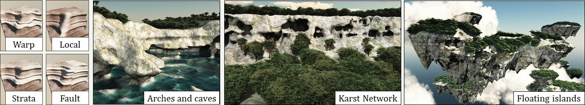

Axel Paris - PhD Student in Computer Graphics
Home
Publications
Resume
Email
Twitter
Terrain Amplification With Implicit 3D Features
June 21, 2019. Last updated on September 25, 2019.

Preprint
PDF
Video
Supplementary Video
Slides
Code
While three-dimensional landforms, such as arches and overhangs, occupy a relatively small proportion of most computer generated landscapes,
they are distinctive and dramatic and have an outsize visual impact. Unfortunately, the dominant heightfield representation of terrain precludes
such features, and existing in-memory volumetric structures are too memory intensive to handle larger scenes.
In this paper, we present a novel memory-optimized paradigm for representing and generating volumetric terrain based on implicit surfaces. We
encode feature shapes and terrain geology using construction trees that arrange and combine implicit primitives. The landform primitives themselves
are positioned using Poisson sampling, built using open shape grammars guided by stratified erosion and invasion percolation processes, and, finally,
queried during polygonization.
Users can also interactively author landforms using high-level modeling tools to create or edit the underlying construction trees, with support for
iterative cycles of editing and simulation.
We demonstrate that our framework is capable of importing existing large-scale heightfield terrains and amplifying them with such diverse structures
as slot canyons, sea arches, stratified cliffs, fields of hoodoos, and complex karst cave networks.
@article{Paris2019T3D,
author = {Paris, Axel and Galin, Eric and Peytavie, Adrien and Gu{\'e}rin, Eric and Gain, James},
title = {Terrain Amplification with Implicit 3D Features},
journal = {ACM Trans. Graph.},
volume = {38},
number = {5},
year = {2019},
pages = {147:1--147:15},
}
Copyright by the authors, 2019. This is the author's version of the work. It is posted here for your personal use. Not for redistribution.
The definitive Version of Record was published in ACM Transactions on Graphics: Link